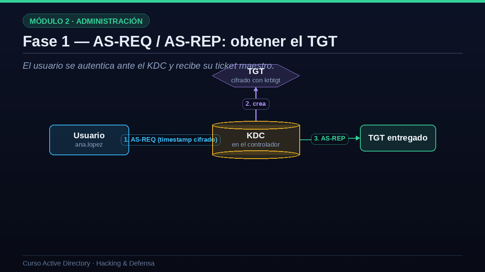
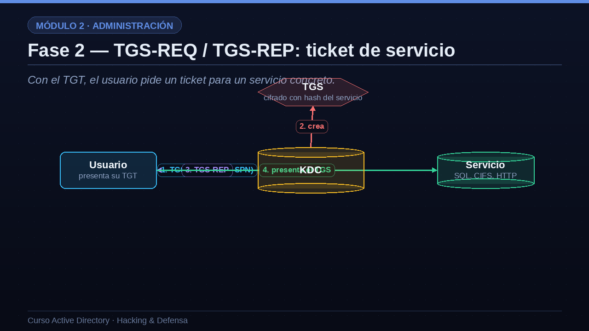
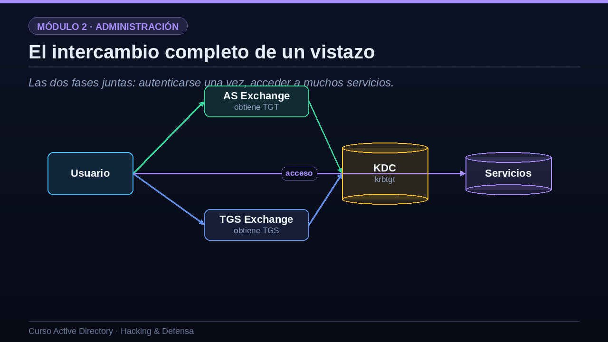

01La idea de Kerberos
Demostrar quién eres sin enviar nunca tu contraseña por la red.
La idea de Kerberos se puede resumir en una frase: demostrar quién eres sin enviar nunca tu contraseña por la red. Para lograrlo, introduce un tercero de confianza, el centro de distribución de claves o KDC, que vive dentro del controlador de dominio y media en cada autenticación. En lugar de andar enseñando la contraseña, el usuario obtiene tickets: pruebas temporales de identidad que presenta a los servicios. Como los tickets caducan al cabo de unas horas, el protocolo depende mucho del tiempo, y por eso todos los equipos del dominio deben tener el reloj sincronizado; una diferencia de más de cinco minutos rompe la autenticación. Y, muy importante, Kerberos trabaja en dos fases: primero consigues un ticket maestro, el TGT, y después, usando ese TGT, pides tickets concretos para cada servicio al que quieras acceder.
- Un tercero de confianzaEl KDC, que vive en el controlador, media en cada autenticación.
- Tickets en vez de contraseñasPruebas temporales de identidad que se presentan a los servicios.
- Basado en el tiempoLos tickets caducan; por eso el reloj del dominio debe ir sincronizado.
- Dos fasesPrimero consigues un TGT; luego, con él, pides tickets de servicio.
02Fase 1 — AS-REQ / AS-REP: obtener el TGT
El usuario se autentica ante el KDC y recibe su ticket maestro.
Veamos la primera fase, el intercambio AS guion REQ y AS guion REP, en la que el usuario obtiene su ticket maestro. Paso uno: Ana envía al KDC una petición llamada AS guion REQ. Dentro, incluye una marca de tiempo, el timestamp actual, cifrada con el hash de su propia contraseña. Esto es la preautenticación: como solo Ana conoce su contraseña, solo ella puede haber cifrado correctamente la hora. Paso dos: el KDC descifra el timestamp con el hash que tiene guardado de Ana; si coincide, confirma que es ella. Entonces crea el TGT, el ticket de concesión de tickets, y lo cifra con una clave secretísima: el hash de una cuenta especial llamada krbtgt. Paso tres: el KDC devuelve ese TGT al usuario en la respuesta AS guion REP. A partir de aquí, Ana tiene su pase maestro. Guarda el nombre krbtgt: esa cuenta es la llave del reino, y volveremos a ella con el Golden Ticket.

03Fase 2 — TGS-REQ / TGS-REP: ticket de servicio
Con el TGT, el usuario pide un ticket para un servicio concreto.
Pasemos a la segunda fase, el intercambio TGS guion REQ y TGS guion REP, en la que Ana consigue acceder a un servicio concreto, por ejemplo una base de datos. Paso uno: Ana envía al KDC una petición TGS guion REQ en la que presenta su TGT, como prueba de que ya está autenticada, e indica el SPN del servicio al que quiere acceder. Paso dos: el KDC comprueba el TGT y, si es válido, crea un ticket de servicio, el TGS, y lo cifra con el hash de la contraseña de la cuenta que ejecuta ese servicio. Paso tres: devuelve el TGS a Ana en la respuesta TGS guion REP. Paso cuatro: Ana presenta ese TGS directamente al servicio, que lo descifra con su propia clave y le da acceso. Fíjate en el detalle crucial del paso dos: el TGS va cifrado con el hash del servicio. Eso significa que quien reciba un TGS puede intentar crackear ese hash offline. Justo ahí nace el Kerberoasting.

04El intercambio completo de un vistazo
Las dos fases juntas: autenticarse una vez, acceder a muchos servicios.
Veamos las dos fases juntas, porque así se entiende la elegancia del diseño. El usuario pasa por el intercambio AS una sola vez, al principio del día, y obtiene su TGT. A partir de ahí, cada vez que necesita acceder a un servicio nuevo, solo tiene que hacer un intercambio TGS, presentando el TGT que ya tiene, para obtener el ticket de ese servicio. No vuelve a teclear la contraseña. Este es el famoso inicio de sesión único, el single sign on: te autenticas una vez y accedes a todo lo que te corresponde durante horas. El KDC, en el centro, es quien lo orquesta todo, y la cuenta krbtgt es el secreto que sostiene la confianza de todo el sistema. Si un atacante roba el hash de krbtgt, puede fabricar TGT falsos para cualquier usuario: eso es el Golden Ticket, y por eso es tan devastador.

05Cada paso tiene su ataque
Casi todo el hacking de Kerberos abusa de una pieza concreta del protocolo.
Para cerrar, conectemos lo aprendido con el módulo de hacking, porque verás que cada ataque corresponde a una pieza concreta del protocolo. Si un usuario tiene desactivada la preautenticación, un atacante puede pedir su AS guion REP y crackearlo: eso es el AS-REP Roasting. Como el TGS va cifrado con el hash del servicio, se puede pedir y crackear: eso es el Kerberoasting. Si un atacante roba un TGT o un TGS de la memoria de un equipo, puede reutilizarlo: eso es Pass-the-Ticket. Si compromete el hash de krbtgt, fabrica TGT falsos: Golden Ticket. Si compromete el hash de un servicio concreto, fabrica TGS falsos para él: Silver Ticket. Y las delegaciones mal configuradas permiten que un servicio se haga pasar por otros usuarios. Fíjate en que ninguno de estos ataques rompe la criptografía de Kerberos: todos abusan de cómo está diseñado y configurado. Por eso entender el protocolo es la mejor defensa.
| Pieza del protocolo | Ataque que la abusa |
|---|---|
| Preautenticación desactivada | AS-REP Roasting |
| TGS cifrado con hash del servicio | Kerberoasting |
| Robo de un TGT o TGS en memoria | Pass-the-Ticket |
| Hash de krbtgt comprometido | Golden Ticket |
| Hash de un servicio comprometido | Silver Ticket |
| Delegación mal configurada | Abuso de delegación Kerberos |
06Resumen de la lección
Recapitulemos esta lección clave. Kerberos autentica con tickets en lugar de contraseñas, mediante el KDC, que actúa como tercero de confianza dentro del controlador. En la primera fase, el intercambio AS, la preautenticación demuestra la identidad del usuario y este recibe su TGT, cifrado con el hash de la cuenta krbtgt. En la segunda fase, el intercambio TGS, el usuario obtiene tickets de servicio cifrados con el hash de cada servicio, lo que abre la puerta al Kerberoasting. Y por encima de todo, recuerda que la cuenta krbtgt es la llave del reino: quien tiene su hash puede fabricar TGT falsos. En la siguiente lección usaremos todo esto para diseñar un Active Directory seguro, con el modelo de niveles. Nos vemos en la lección siete.
- Kerberos = tickets, no contraseñasEl KDC, en el DC, media con un tercero de confianza.
- Fase 1: AS → TGTLa preautenticación demuestra la identidad; el TGT se cifra con krbtgt.
- Fase 2: TGS → servicioEl TGS se cifra con el hash del servicio (de ahí el Kerberoasting).
- krbtgt es la llave del reinoSu hash permite fabricar TGT falsos: el Golden Ticket.